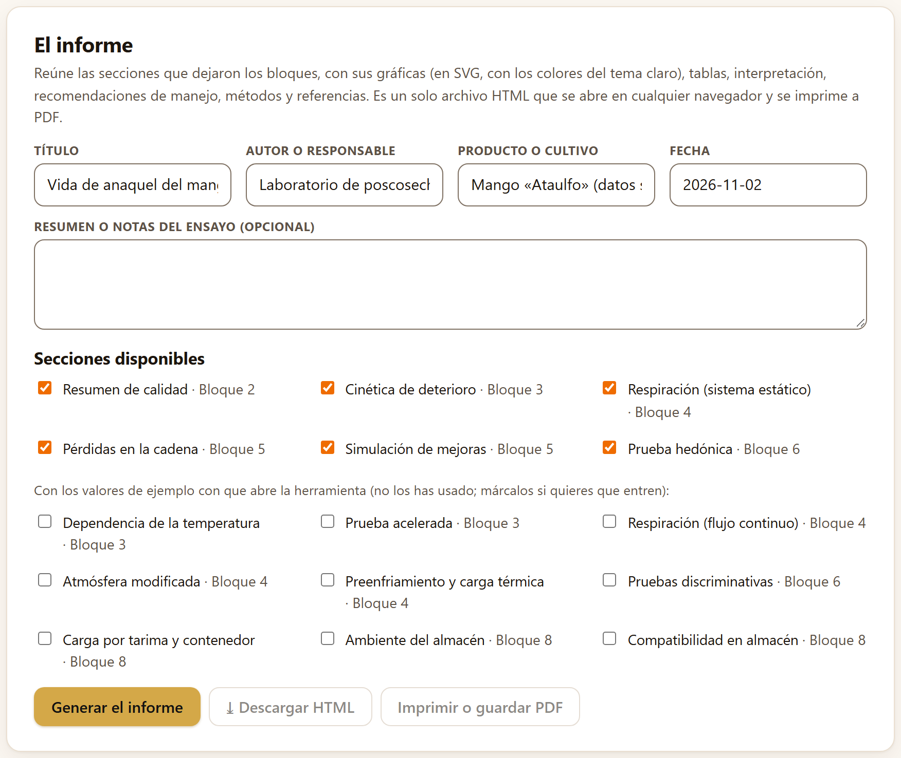
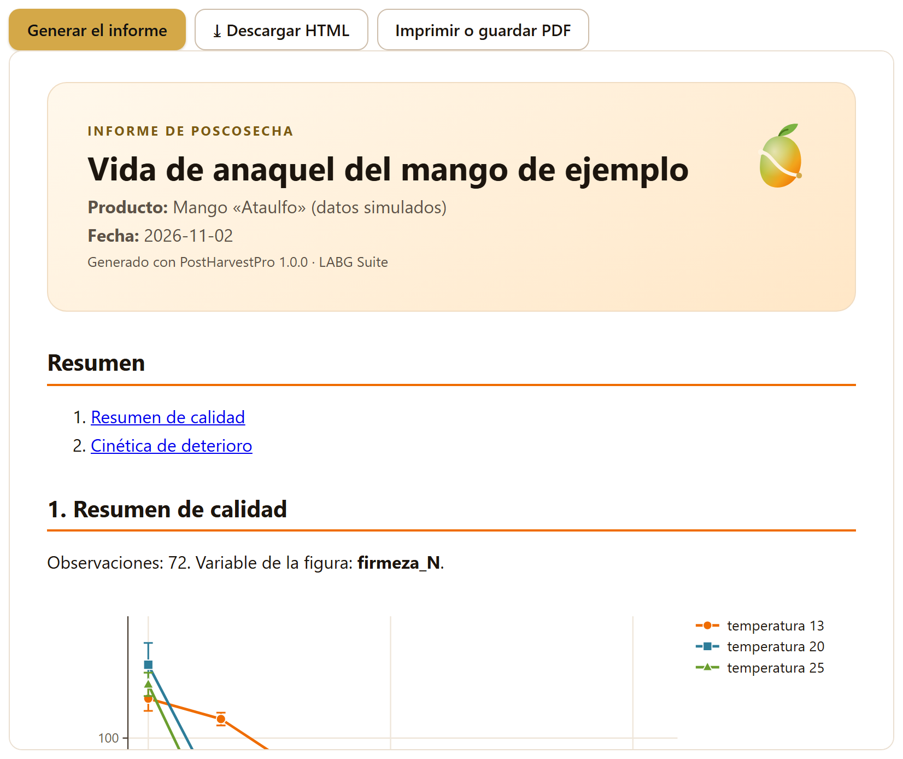
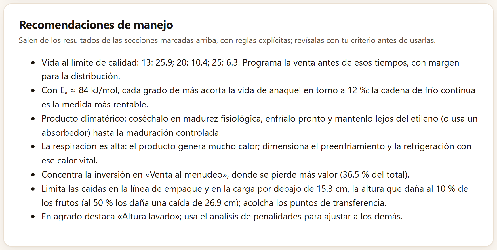
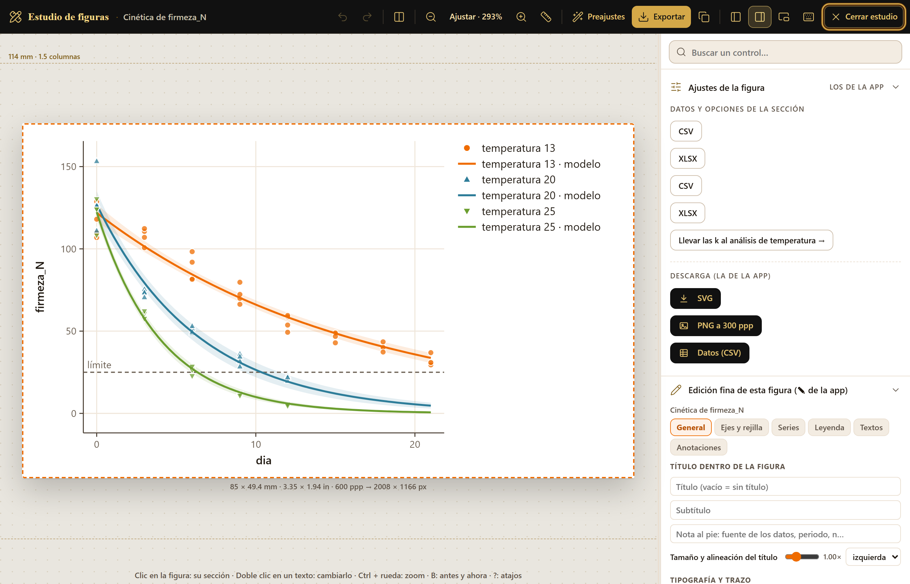

Lo que calculaste en los bloques 2 a 8, listo para salir de la app: un informe de un solo archivo, con figuras, tablas, interpretación, recomendaciones de manejo, métodos, referencias y cita, que se abre en cualquier navegador y se imprime a PDF; las figuras, una por una, desde el estudio de figuras; y el proyecto, un archivo pequeño con el que el trabajo se vuelve a abrir tal como quedó. El bloque no calcula nada nuevo: reúne lo que ya está en pantalla.
El subtítulo del bloque dice lo que hace: Todo lo que calculaste, en un documento para compartir; y tu trabajo, en un archivo para seguir después. No tiene pestañas, sino cuatro tarjetas, una debajo de otra: El informe, Recomendaciones de manejo, Proyecto y Cómo citar PostHarvestPro.
Cada análisis que corres en los bloques 2 a 8 deja una sección lista para el informe. La tarjeta El informe te deja escribir la portada, elegir qué secciones entran y generar el documento.
Su indicación lo resume: Reúne las secciones que dejaron los bloques, con sus gráficas (en SVG, con los colores del tema claro), tablas, interpretación, recomendaciones de manejo, métodos y referencias. Es un solo archivo HTML que se abre en cualquier navegador y se imprime a PDF. Los campos de la portada son:
| Campo | Qué va y dónde sale |
|---|---|
| Título | El título del informe y de la pestaña del navegador; abre con Ensayo de poscosecha |
| Autor o responsable | Sale en la portada como Responsable; si lo dejas vacío, no aparece |
| Producto o cultivo | Sale como Producto; también se omite si está vacío |
| Fecha | Abre con la fecha del día, en la forma año-mes-día; puedes escribir otra |
| Resumen o notas del ensayo (opcional) | Un párrafo libre que abre la sección Resumen, antes del índice |

Secciones disponibles lista una casilla por sección, con su nombre y su bloque (· Bloque 2…), en el orden de los bloques. Hay hasta 27, una por cada análisis que deja resultados:
| Bloque | Secciones |
|---|---|
| 2 | Resumen de calidad, Color, Escala de madurez o daño, Calibres |
| 3 | Cinética de deterioro, Dependencia de la temperatura, Prueba acelerada, Tiempo hasta el rechazo |
| 4 | Respiración (sistema estático), Respiración (flujo continuo), Climaterio, Atmósfera modificada, Preenfriamiento y carga térmica |
| 5 | Pérdidas en la cadena, Simulación de mejoras, Daño mecánico |
| 6 | Pruebas discriminativas, Prueba hedónica, Punto justo y penalidades, CATA, Perfil descriptivo |
| 7 | Ensayo factorial, Medidas repetidas, Comparación de pendientes |
| 8 | Carga por tarima y contenedor, Ambiente del almacén, Compatibilidad en almacén |
La lista tiene dos partes. Arriba, marcadas, las secciones que usaste: las de las herramientas donde cargaste datos, editaste una tabla o cambiaste un ajuste. Abajo, sin marcar y bajo el rótulo Con los valores de ejemplo con que abre la herramienta (no los has usado; márcalos si quieres que entren):, las que sólo tienen los valores de partida. Las herramientas que abren con valores escritos calculan desde que se abre la app y por eso dejan su sección sin que las toques: Dependencia de la temperatura, Prueba acelerada, Respiración (flujo continuo), Atmósfera modificada, Preenfriamiento y carga térmica, Pérdidas en la cadena, Simulación de mejoras, Pruebas discriminativas y las tres del Bloque 8, once en total. Al abrir la app, todas están abajo y arriba dice Todavía no hay secciones: corre algún análisis en los bloques 2 a 8.; en cuanto trabajas en una de esas herramientas, su sección sube y se marca sola.
Puedes marcar o desmarcar cualquiera: el informe lleva exactamente las marcadas, y la app recuerda tu elección aunque la lista se rehaga al correr otro análisis. Las calculadoras sueltas —acidez, humedad, firmeza y pérdida de peso del Bloque 2, ventilación, costo y unidades del Bloque 8— no dejan sección.
Debajo de las secciones hay tres botones, y queda un último paso antes de compartir:
informe_postharvestpro.html. Es un solo archivo, con las figuras dentro en SVG, que se abre sin conexión en cualquier navegador y se puede mandar por correo.
El documento tiene siempre la misma estructura:
| Parte | Contenido |
|---|---|
| Portada | Informe de poscosecha, el título, el producto, el responsable y la fecha, el logotipo de la app y la línea Generado con PostHarvestPro 1.0.0 · LABG Suite |
| Resumen | Tus notas, si las escribiste, y el índice de las secciones con enlaces |
| Las secciones | Numeradas, una por cada casilla marcada, con lo que dejó su herramienta: figuras, tablas y lectura. Por ejemplo, Resumen de calidad trae el número de observaciones, la variable de la figura, la figura de su evolución, la lectura y la tabla por grupo y tiempo |
| Recomendaciones de manejo poscosecha | Las de la sección 9.4, con la advertencia de que salen de reglas y deben revisarse con el conocimiento del cultivo y del mercado |
| Métodos y referencias | Una nota de que todo se calculó en el navegador con métodos validados contra implementaciones independientes; los métodos de los bloques de las secciones marcadas, con sus fuentes abreviadas (los mismos de la sección 1.5); y la lista completa de esas obras |
| Cómo citar | La referencia y la entrada BibTeX del programa (sección 9.7) |
| Pie | Programa, versión, autor, licencia y dirección |
Las referencias se eligen por bloque, no por sección: si incluyes sólo Resumen de calidad, el informe lista los seis métodos del Bloque 2 y sus obras, aunque no hayas usado las escalas ni los calibres.
La segunda tarjeta convierte los resultados en recomendaciones prácticas: Salen de los resultados de las secciones marcadas arriba, con reglas explícitas; revísalas con tu criterio antes de usarlas. Se rehacen cada vez que un bloque cambia un resultado o que marcas o desmarcas una sección, y son las mismas que entran al informe.

Cada recomendación sale de una regla fija aplicada al resultado de una sección, y sólo se escribe si esa sección está marcada (la de las cajas, que no deja sección, si trabajaste en Bloque 8›Ventilación de cajas). La tabla dice cuál; la última columna da lo que escribe la app con los ejemplos cargados.
| Se escribe si… | Lo que recomienda, con los ejemplos |
|---|---|
| Los modelos cinéticos del Bloque 3 dan una vida al límite | La vida de cada grupo —13: 25.9; 20: 10.4; 25: 6.3— y programar la venta antes, con margen para la distribución |
| Temperatura (Bloque 3) tiene una Eₐ | Cuánto acorta la vida cada grado de más, calculado de 10 a 11 °C: Con Eₐ ≈ 84 kJ/mol, … en torno a 12 %, con las k del mango llevadas desde los modelos cinéticos; la cadena de frío continua es la medida más rentable |
| Climaterio (Bloque 4) clasifica el producto como climatérico | Cosechar en madurez fisiológica, enfriar pronto y mantener lejos del etileno hasta la maduración controlada |
| El sistema estático (Bloque 4) da más de 40 mg CO₂ kg⁻¹ h⁻¹ | Dimensionar el preenfriamiento y la refrigeración con el calor de la respiración (el aguacate del ejemplo respira 59.4) |
| Hay un cálculo de atmósfera modificada (Bloque 4) | Si llega a la ventana, verificar con lecturas reales; si no, cambiar película, espesor, área o masa (con los valores de partida no llega, pero su sección no entra mientras no la uses o la marques) |
| Hay una cadena de pérdidas (Bloque 5) | Invertir en la etapa que pierde más valor: «Venta al menudeo» … (36.5 % del total) con la cadena del jitomate |
| El daño mecánico (Bloque 5) tiene la curva de incidencia | Mantener las caídas por debajo de la altura que daña al 10 % de los frutos, con su valor y su unidad, y acolchar los puntos de transferencia: Limita las caídas en la línea de empaque y en la carga por debajo de 15.3 cm, la altura que daña al 10 % de los frutos (al 50 % los daña una caída de 26.9 cm); acolcha los puntos de transferencia. Si aun las caídas más bajas del ensayo dañan a más del 10 %, pide acolchar y evitar cualquier caída libre |
| La hedónica (Bloque 6) tiene un producto preferido | Destacarlo («Altura lavado») y usar las penalidades para ajustar a los demás |
| El ambiente del almacén (Bloque 8) da más de 2 % de pérdida de agua por semana | Subir la humedad relativa, bajar la temperatura del producto o usar un empaque que frene la transpiración |
| Las cajas (Bloque 8) tienen menos de 5 % de área abierta en alguna cara | El enfriamiento con aire forzado será lento |
| La compatibilidad (Bloque 8) encuentra pares incompatibles | Separar los productos por temperatura o por etileno |
La recomendación de la cadena de frío usa la Eₐ de Bloque 3›Temperatura, que abre con las k del ajuste del mango de ejemplo. Su sección entra cuando la usas: lo más directo es pulsar Llevar las k al análisis de temperatura → en Bloque 3›Modelos cinéticos (capítulo 3), que copia las k de tu propio ajuste.
Sin secciones marcadas —por ejemplo, al abrir la app—, la tarjeta dice Aún no hay resultados de los que sacar recomendaciones.; en el informe, si ninguna sección marcada da recomendación, la parte de recomendaciones dice Sin recomendaciones automáticas para estas secciones.
Las figuras del informe son las mismas de la app. Si las necesitas sueltas —para una tesis, un artículo o una presentación—, cada una se descarga desde su recuadro, y se pule en el estudio de figuras o en su editor.
En la esquina de cada figura hay dos descargas rápidas: Descargar SVG, un vector que se edita en cualquier programa de dibujo, y Descargar PNG a 300 ppp, una imagen de 170 mm de ancho —el de una página de revista— con su resolución escrita en el archivo. Las dos llevan los colores del tema claro. Muchas figuras tienen además Datos de la figura (CSV), con los números que se dibujaron. Al pasar el puntero aparecen dos botones más: ✎ (Editar esta figura: títulos, ejes, series, leyenda, textos y anotaciones) y el del lápiz con regla (Abrir en el estudio de figuras: pantalla dividida para editar y exportar). La búsqueda Ctrl + K también encuentra las figuras por su título y las abre en el estudio.

El estudio es común a toda la suite. Pone la figura a la izquierda, a escala, y el inspector a la derecha. La barra de arriba deshace y rehace, compara el antes y el ahora, acerca y aleja (Ajustar la deja del tamaño de la pantalla), muestra una regla, aplica Preajustes de un clic y exporta con Exportar; otros botones acomodan el inspector y Cerrar estudio vuelve a la app. El inspector empieza con Buscar un control… y tiene estas secciones:
| Sección | Qué hace |
|---|---|
| Ajustes de la figura | Los controles que la figura tiene en su bloque. En Datos y opciones de la sección, aquí, las descargas CSV y XLSX de las dos tablas de la tarjeta y Llevar las k al análisis de temperatura →; en Descarga (la de la app), los tres botones de la esquina de la figura con su nombre: SVG, PNG a 300 ppp y Datos (CSV) |
| Edición fina de esta figura (✎ de la app) | El editor de la figura, acoplado y encabezado con su título completo (Cinética de firmeza_N), con sus pestañas General, Ejes y rejilla, Series, Leyenda, Textos y Anotaciones: título, subtítulo y nota al pie dentro de la figura, tipografía, tamaño de los textos, grosor de las líneas, tamaño de los puntos, fondo y marco |
| Paleta y color | Cambia los colores de las series por una paleta (LABG oro y negro, Okabe e Ito, Viridis (ordenada), Grises…) y simula cómo la ve una persona con daltonismo (sólo en pantalla) |
| Texto y líneas, Leyenda | Ajustes del estudio para los textos y la leyenda; en las figuras de la app, la leyenda se acomoda desde la pestaña Leyenda del editor |
| Tamaño y exportación | Formato PNG, SVG, PDF o TIFF; Ancho 85, 114 o 180 mm (o en pulgadas); Resolución 300, 600 o 1200 ppp; Fondo blanco, como se ve o transparente. Avisa si el texto queda demasiado chico para una revista |
| Preajustes, Historial | Combinaciones listas de tamaño y estilo, y la lista de los cambios hechos |
El pie del estudio recuerda los atajos: Clic en la figura: su sección · Doble clic en un texto: cambiarlo · Ctrl + rueda: zoom · B: antes y ahora · ?: atajos. Los cambios del estudio y del editor sólo afectan a cómo se ve la figura, nunca a los datos ni a los cálculos.
Una figura de la app reducida a 85 mm deja textos de unos 4 pt, y el estudio lo advierte (las revistas suelen pedir 6 a 8 pt). Antes de exportar para una revista, sube el tamaño de los textos en el editor o usa un preajuste.
La app no guarda tus datos entre una sesión y otra: cada vez que la abres empieza vacía. La tarjeta Proyecto resuelve eso: Guarda en un archivo JSON las tablas que cargaste, las columnas que elegiste, las tablas editadas y los ajustes. Al abrirlo, la app recalcula todo. El archivo se queda en tu equipo.
proyecto_postharvestpro_fecha.json con las tablas de todas las herramientas que leyeron datos (con el papel de cada columna), todas las tablas editables (escalas, calibres, cadena, películas, productos…), el valor de cada campo y cada selector de los bloques 2 a 8, el idioma, los datos de la portada del informe y qué secciones usaste y cuáles marcaste o desmarcaste.No hay atajo de teclado para guardar: se hace con el botón. El proyecto no guarda las figuras ni el informe, que se rehacen al abrirlo. Si al cerrar la pestaña ya habías trabajado, la app te advierte que perderás lo que no guardaste.
Guarda un proyecto por ensayo o por lote, con la fecha en el nombre. Es un archivo de texto pequeño que se manda por correo: quien lo abra en su propia copia de PostHarvestPro ve exactamente tus resultados y puede revisar cada decisión, de las columnas elegidas a los límites de los calibres.
La última tarjeta repite la cita de la portada (sección 1.8), sin botones de copiar: la referencia en el idioma de la interfaz y la entrada BibTeX.
La entrada BibTeX lleva la clave barreraguzman2026postharvestpro, el título en inglés, la versión, el año, la licencia GPL-3.0-or-later y la dirección. La cita todavía no tiene DOI; se añadirá cuando el programa se publique con uno. Cita además el método de cada resultado, que da su línea Método y fuente: y la sección Métodos y referencias del informe.
| Si vas a entregar un reporte a un productor o a un cliente | entonces genera el informe sólo con tus secciones, revisa las recomendaciones y guárdalo como PDF. |
| Si una figura va a una tesis o a una revista | entonces expórtala desde el estudio: PDF o SVG si se va a editar, PNG o TIFF a 600 ppp si piden imagen, con el texto a 6–8 pt. |
| Si necesitas los números en una hoja de cálculo | entonces usa los botones ⤓ CSV o ⤓ XLSX de cada tabla, o Datos de la figura (CSV). |
| Si vas a seguir otro día o a compartir el análisis | entonces guarda el proyecto. |
El informe y el proyecto se quedan en tu equipo; nada se envía a ningún servidor.
Falta en el informe una sección que esperaba. Está en la parte de abajo de la lista, sin marcar: o no la usaste (sólo tiene los valores de partida de la herramienta) o la desmarcaste; márcala y vuelve a generar. Falta una recomendación. Su sección no está marcada (sección 9.4). El informe no muestra un cambio reciente. La vista previa es una foto del momento: pulsa otra vez Generar el informe. Los botones de descargar e imprimir están apagados. Se encienden después de generar el informe. El proyecto no abre. El archivo no es un proyecto de PostHarvestPro o se dañó al editarlo a mano; ábrelo con un editor de texto y comprueba que contenga la línea "app": "PostHarvestPro". Al abrir un proyecto falta una tabla. Si la herramienta cambió de versión, alguna columna o ajuste puede no coincidir; vuelve a cargar esa tabla y guarda un proyecto nuevo.